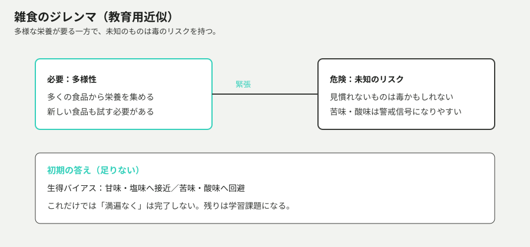
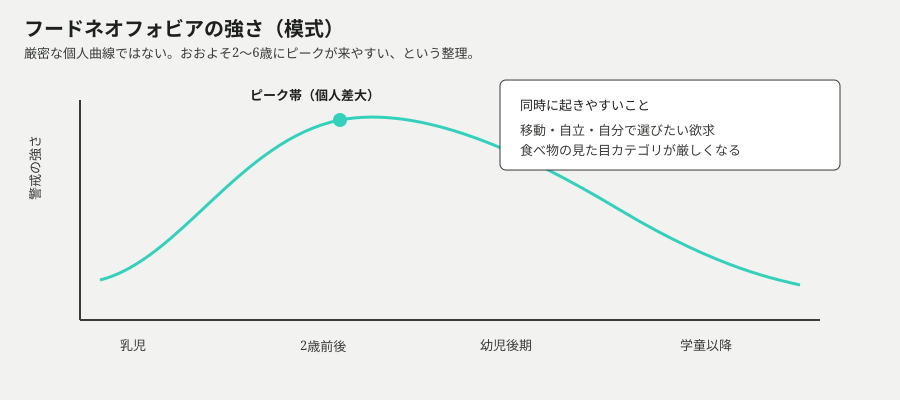
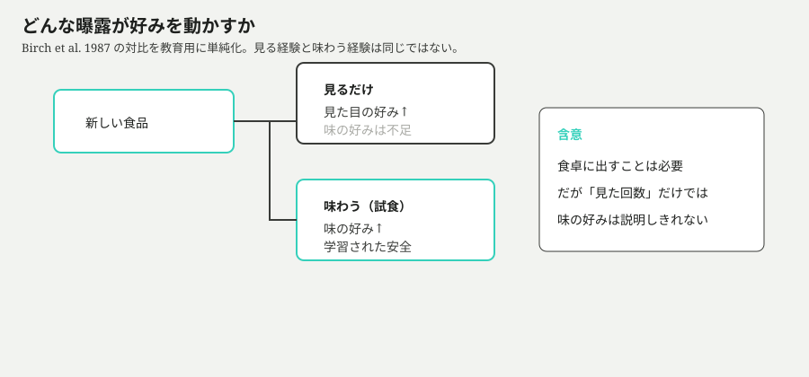
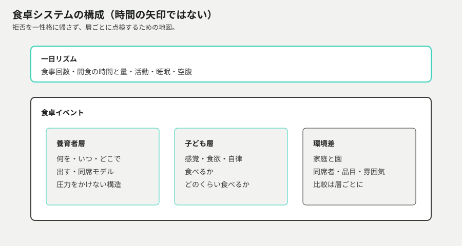
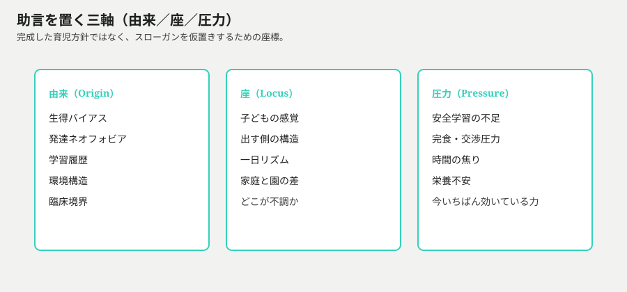

入口
2歳3か月の子が、好きなものしか口にしない。同じ食卓に出した野菜は見ただけで首を振り、昨日は食べたものを今日は拒否する。親の側には、はっきりした願いがある。いろんな食べ物を、満遍なく食べられるようになってほしい。
願いは健全だ。だが食卓では、願いがすぐに「今夜どうやって一口入れさせるか」に縮みやすい。交渉、おまけ、叱責、隠し味。どれもその場では効くことがある。効いたように見えた瞬間に、次の食事でまた拒否されることもある。
育児書やSNSは助言を並べる。「無理強いしない」「何度も出す」「おいしそうに食べて見せる」。正しそうな文が並ぶほど、どれがどの問題への応答なのかが見えにくくなる。子どもの性格の問題なのか。親の技量の問題なのか。それとも、食べること自体が、別の設計制約を抱えているのか。
この記事では、完成した育児方針を先に配らない。入口で「こうすれば直る」も固定しない。先に置くのは、2歳前後の「好きだけ」を、雑食という生き物の制約から読み直す道筋である。
この記事で獲得する操作
知識量ではなく、次の操作ができることを目標にする。
- 存在理由をたどる — なぜ幼児は新しい食べ物を警戒し、なぜ親の「満遍なく」は摩擦になるのかを、第一原理から言える。
- 拒否を分解する — 新奇拒否、狭い好み、量のムラ、臨床的な懸念を混ぜずに読む。
- 地図を選ぶ — 発達の系譜と、いまの食卓の構成図を取り違えない。
- 助言を座標付けする — 「15回出せ」「隠せばいい」「親のせい」を、事実・争点・測定に分けて疑える。
そのために、次の六つの問題を順に解いていく。
- なぜ「いろんなものを食べる」は、そもそも難しい設計なのか。
- なぜ2歳前後に、新しい食べ物への警戒が強まりやすいのか。
- 好みは一発で決まるのか。何が「安全」を学習させるのか。
- 周囲の食べ方と、食べさせ圧力は、学習をどう変えるのか。
- いまの食卓は、どの部品の組み立て問題なのか。
- 世の助言をどの軸で置き、何を問いに残すか。
身近な違和感はまだ解けていない。好きなものしか食べない子と、満遍なく食べさせたい親は、同じ食卓で別の問題を解いているのではないか。
雑食の設計
親が困っているのは、しばしば「今夜の野菜」である。だが摩擦の根は、もう一段深いところにある。ヒトの子どもは、雑食として育つ。雑食は便利なようで、厄介な設計でもある。
一方では、単一の食品だけでは足りない栄養を、多くのものから集める必要がある。他方では、口に入れた未知のものが安全だとは限らない。多様でありたい欲求と、毒を避けたい警戒が、同じ行為——食べる——の中で張り合う。(*1)
この緊張を、進化心理学では雑食のジレンマと呼ぶことがある。名前はどうでもよい。大事なのは、幼児の食卓が「好みの有無」だけの話ではない、という点だ。最初から、広げたい力と、閉じたい力が同居している。
では、生まれたばかりの体は、この緊張をどう処理しているのか。完全な万能メニュー表を持って生まれてくるわけではない。持っているのは、少数の生得的な傾きだ。甘味や塩味には近づきやすく、苦味や酸味には顔をしかめやすい。エネルギー源の手がかりと、毒性の手がかりに対する、粗いフィルタである。(1)(2)
粗いフィルタは役に立つ。だが「満遍なく」には足りない。野菜の苦み、初めての食感、見たことのない色。健康のためにと親が並べるものほど、初期フィルタに引っかかりやすいことがある。現代の食品環境では、甘くて脂のあるものがこのフィルタをさらに勝ちやすくする。(*3)
ここで、親の願いが初めて正確に見える。いろんな食べ物を食べられるようになってほしい、という願いは、雑食として生きるための学習課題そのものだ。子どもの意志が弱いから起きている問題、というより先に、設計上の宿題がある。

得たものは、危険を粗く避ける初期設定である。失うのは、苦味食品などへの即時の好意である。適用範囲は、ほぼすべてのヒト幼児の出発点だ。ここまでの出口は短い。満遍なく食べることは、しつけの前に、雑食設計上の学習課題である。
では、なぜその課題が、特に2歳前後で急にうるさく見えるのか。
ネオフォビアのピーク
2歳3か月は、親にとって特別な数字に見えやすい。昨日まで口にしていたものを拒否し、新しいものを見ただけで「いや」と言う。自我が芽生えた、イヤイヤ期だ、育て方を間違えた——物語はすぐに用意される。
研究側の言葉は、もう少し乾いている。フードネオフォビア、食物新奇恐怖。新しい食品を嫌がる、または避けようとする傾向だ。これは「既によく知っている食品まで極端に狭く拒否する」好みの狭さ（picky / fussy）と関連するが、同じものとしては扱われないことが多い。(*4)
奇妙なのは、この警戒が年齢によって強さを変えることだ。乳児期には新しい食品への反応が比較的穏やかなことも多い。親がアクセスをかなり制御している時期でもある。ところが子どもが自分で動き、手を伸ばし、口に運ぶ力が上がると、未知のものを口にするリスクも上がる。警戒が強まるのは、その時期と重なりやすい。おおよそ2歳から6歳にかけてピークが来やすい、という整理が繰り返されてきた。(4)(5)
ピークは、単なる気分の波ではない。同じ頃、子どもは「食べ物らしい見た目」のカテゴリを厳しくし始める。原型から外れた色、形、混ざり方は、味の前に拒否の理由になる。未試食なのに「嫌い」が口に出る光景は、カテゴリ判定の速さでもある。(*6)
ここに、親の誤解が入り込む隙間がある。拒否が目立つほど、それは固定した性格や、失敗した育児の証拠に見えてしまう。だがネオフォビアを適応的な設計特徴として読むなら、話は変わる。未知を警戒できる子どもは、雑食のリスク管理としてはむしろ標準に近い。問題は、現代の食卓ではその警戒が「野菜を増やしたい親」と正面衝突することだ。(*7)

得たものは、自立が進む時期の安全マージンである。失うのは、新奇食品をすぐ試す柔軟さであり、親から見ると「わがまま」に見えることだ。適用範囲は大きいが、個人差も大きい。すべての2歳が同じ曲線を描くわけではない。
出口は一つ。2歳前後の「好きなものしか食べない」は、まず失敗の証明書として読まないほうがよい。適応的警戒のピークとして読めることが多い。では、その警戒は、どうすれば「嫌い確定」ではなく、学習可能な状態になるのか。
反復試食と学習された安全
子どもが「嫌い」と言った瞬間、親は二つの解釈を持てる。一つは、好みが確定した、という解釈。もう一つは、まだ安全を学習していない、という解釈。外見は同じ拒否でも、後者なら話は続く。
学習の中核にあるのは、地味な反復である。2歳児を対象にした古典実験では、最初は新しかった食品への好みが、曝露の回数に応じて上がった。チーズでも果物でも、より多く経験したものが選ばれやすかった。好みは、一発の運命診断というより、頻度の関数として振る舞った。(*8)
ただし「出す」の中身が重要になる。別の実験では、子どもたちに新しい果物を、見る条件と味わう条件で何度も経験させた。見た目についての好みは、見るだけでも上がりうる。だが味についての好みを動かすには、味わう経験が必要だった。見るだけで味が好きになる、という近道は支持されなかった。これは学習された安全の読み方と整合する。新しい味を試し、悪い結果が続かなければ、警戒は下がりうる。(*9)
ここに、家庭の誤解が入りやすい。食卓に並べた回数を数え、見た回数を「努力」として積む。並べることは必要だ。だが並べただけで味の学習が終わったことにはならない。一口でも触れる、舌に乗せる、吐き出す——試食の定義は現場で広い。重要なのは、害のない経験として味のチャネルが開くことだ。
回数の話も、魔法の数字にしないほうがよい。古典条件では5回、10回、15回といった段階が使われた。要約が「15回出せば好きになる」になるのは理解できる。だがそれは、特定の設定での曝露効果を、家庭の全食品・全個人へそのまま移植できるという意味ではない。

シミュレーションを開く — 味の好みを上げるには、見るだけでなく味わう経験が必要で、好みは曝露頻度の関数になりうる
得たものは、拒否を更新可能な学習として扱えることだ。失うのは、一食で決着がつく速さである。適用範囲は典型発達の幼児が中心で、強い苦痛や嘔吐、極端な制限は別の評価が要る。
出口は短い。新しい食べ物へのチャレンジは、度胸の問題というより、害が続かない試食の積み重ねである。では、その積み重ねを、周囲の大人の振る舞いと「食べさせ方」はどう助けるのか。あるいは壊すのか。
社会的模倣と圧力
反復試食が学習の骨格だとしても、子どもは実験室の個室で一人食べているわけではない。隣で大人が食べている。褒められる。残すなと言われる。デザートが人質になる。学習は、味だけでなく、社会的な文脈でも起きる。
社会的模倣は、その文脈の助けになりうる。周囲が同じ食品を普通に食べていると、子どもが試す確率は上がりやすい。日本の公的ガイドも、好き嫌い・偏食があるときに無理強いせず食卓へ出し、周囲の大人がおいしそうに食べることを助言する。(*10) これは精神論というより、社会的な安全信号の話に近い。
反対側にあるのが、摂食圧力である。残さず食べなさい、という随伴。嫌いなものを食べたら好きなものが得られる、という取引。短期的には口に入る量が増えることがある。だが子どもを対象にした古典研究は、こうした食べさせ方が、好みそのものや食事量の自己調節を歪めうることを示してきた。食べ物が「手段」になると、その食べ物の好みは下がりうる。(11)(12)
ここに、親の願いが分岐する。今夜の栄養を確保したい願いは切実だ。来月も再来月も、自分から幅を広げてほしい願いも切実だ。両方を同じ操作——今すぐ食べさせ切る——で同時に満たそうとすると、衝突する。短期の摂取と、長期の好み学習は、同じレバーではない。
役割を分ける発想は、この衝突への一つの応答である。何を、いつ、どこで出すかは養育者側。食べるか、どのくらい食べるかは子ども側。圧力を減らしたうえで、中立的な反復曝露を残す。Ellyn Satter 系の整理は、この分担を明確にする。(*13) これは「放任」の別名ではない。出す責任を放棄する話でもない。

得たものは、学習を壊しにくい食卓の型である。失うのは、今夜の一口を強制で確保する速さかもしれない。適用範囲は日常の発達的な好き嫌いに厚い。成長が明らかに逸脱している、食べられる品目が極端に少ない、強い苦痛がある——そういう境界では、役割分担の一般論だけで閉じない。
出口ははっきりしている。嫌いなものを食べさせ切ることと、食べられる幅を学ぶことは、同じ操作ではない。では、現場の「食べない」を、どの部品の不調として読めばよいのか。
地図と食卓の層
ここまでの話を、一つの図に詰め込むと壊れる。発達の系譜と、いまの食卓の部品表は、辺の意味が違う。混ぜると、切り方の工夫がネオフォビアの「次の駅」に見えてしまう。
まず系譜の地図。雑食の制約から始まり、生得バイアスでは足りず、幼児期にネオフォビアが強まり、反復試食で学習され、社会的模倣が助け、圧力が副作用を生む。これは「なぜそう見えるか」を時間方向に辿る地図だ。
次に構成の地図。拒否が起きたとき、それは子どもの感覚だけの話か。出す側の構造か。間食で空腹が消えているのか。園と家庭で、同席者や品目や雰囲気が違うのか。ここでは層を並べる。矢印で進化を語らない。
残る誤解も、構成と系譜のあいだにたまる。「偏食は親の失敗」「嫌いなら一生嫌い」「見るだけでも慣れた」「園で食べるなら家が悪い」。それぞれに、半分の観察が含まれていることがある。だが半分を全体に伸ばすと、地図が歪む。成長曲線の逸脱や、極端な品目制限、強い苦痛は、発達ネオフォビアの延長線だけで閉じない境界でもある。(*14)
助言を読むときは、さらに三つの軸が要る。由来——それは生得か、発達ピークか、学習履歴か、環境か、臨床か。座——不調は子どもの感覚か、出す側か、一日リズムか、環境差か。圧力——今いちばん効いているのは安全学習の不足か、完食圧力か、時間の焦りか、栄養不安か。

教育用のツリーは近似である。同じ現象が複数の層に同時所属しうる。それでも、地図を選んでから話す習慣は残る。満遍なく食べてほしい願いは、子どもの性格改革というより、曝露と構造の設計問題として置ける。
では、世に出ているスローガンを、事実と争点と測定に分けてみよう。
主張カタログ
ここからは、正しい育児の結論を書かない。世に出ている言い方を、事実・争点・測定・隠れた価値に分解する。著者の推奨スタックは置かない。
C1 — 「無理強いしなければ自然に広がる」
- 誰が言うか: 公的ガイドの要約、sDOR 系の伝え方、安心を求める保護者同士の会話。
- 合意しやすい事実: 摂食圧力は好みや食卓関係を損ないうる。幼児の好き嫌いは一時的・ムラであることが多い、と支援ガイドは書く。(15)(16)
- 争点: 「無理強いしない」に、曝露も構造も手放す含意を載せるか。自然経過だけで十分か。
- 測定: 拒否の頻度、食卓の葛藤、成長曲線、食べられる品目の変化。
- 隠れた価値: 親の罪悪感を減らすことと、介入を先送りすることのどちらを優先しているか。
C2 — 「15回出せば好きになる」
- 誰が言うか: 研究の要約、SNS、回数で安心したい現場。
- 合意しやすい事実: 反復試食で好みが上がりうる。古典実験は複数回の曝露条件を使う。(17)(18)
- 争点: 15という数字の移植可能性。見るだけか味わうか。個人差・食品差。
- 測定: 選択課題、摂取量、好み評定。家庭では「出した回数」と「味わった回数」が混線しやすい。
- 隠れた価値: 努力を定量化して安心したい。
C3 — 「隠して食べさせれば解決」
- 誰が言うか: 実務howto、今夜の栄養を最優先する会話。
- 合意しやすい事実: 短期的に摂取量は増えることがある。
- 争点: 検出後の信頼、自発的試食、学習された安全をどう数えるか。
- 測定: その食事の摂取量か、後日の自発チャレンジか。どちらを成功と呼ぶかで結論が変わる。
- 隠れた価値: 今夜の栄養完了を、長期の幅より上に置く。
C4 — 「偏食は親の育て方のせい」
- 誰が言うか: 周囲の評価、自己非難、比較文化。
- 合意しやすい事実: 養育環境は影響する。食品の利用可能性や圧力は好みを形作る。(*19)
- 争点: 主因を親に帰せるか。ネオフォビアの発達性・個人差をどう置くか。
- 測定: 親報告、品目数、双生児研究などの寄与分解（完全ではない）。
- 隠れた価値: 責任の所在を一人に集約して話を終わらせたい。
C5 — 「園で食べるなら家が悪い」
- 誰が言うか: 比較する周囲、自己評価。
- 合意しやすい事実: 環境で食べる行動は変わりうる。
- 争点: 差の原因を「家の愛情／技量」だけに帰すか。同行、空腹、品目、圧力、雰囲気の差か。
- 測定: 同一品目の摂取を、層ごとに比較できているか。
- 隠れた価値: 一貫した理想的家庭像への圧力。
EX-place — 置き方の演習
素材: 「うちの子はブロッコリーを見ただけで『いや！』と言う。隠してハンバーグに混ぜれば栄養は取れるし、争いも減る」という保護者投稿（架空）。
操作: 由来／座／圧力の三軸と、Lineage / Composition のどちらで読むかを選び、座標を一文で置く。隠し味を、曝露骨格の条件改善（improves）と、ネオフォビア問題の後継駅のどちらに置くかも書く。
自己チェック: 「親が悪い」一択や「隠し味＝最終解」になっていないか。短期摂取と長期学習のトレードオフが見えているか。
EX-doubt — 疑い方の演習
素材: 「研究では15回出せば好きになる。だからあと7回出せば大丈夫」という要約（架空）。
操作: 上の C2 を選び、共通事実／争点／測定／隠れた価値のうち、いちばん怪しい箇所と足りない測定を書く。
自己チェック: 年齢・食品・試食か視覚か・個人差を無視した一般化を指摘できているか。
主張を分解しただけでは、食卓は変わらない。だが、分解できないまま助言を積むと、同じ衝突を繰り返す。次に残すのは、結論ではなく問いである。
挑発の問い
入口に戻る。好きなものしか食べない2歳前後の子と、満遍なく食べさせたい親は、同じ失敗を共有しているように見えた。今なら、別の読み方ができる。雑食の制約、ネオフォビアのピーク、試食による学習、圧力の副作用、食卓の層。願いは残る。だが願いに対する最短操作は、一つに決まらない。
ここで著者の完成意見は置かない。残すのは、対話の起点になる問いだけである。
P1 — 回数は何を数えるのか
なぜ重要か: 「15回」は安心の数字になりやすい。
思考の型: 境界を問う。
チャットの種: うちの子の「あと何回」は、何を数えるべき回数だろう？ 見た回数か、食卓に出た回数か、味を経験した回数か。
P2 — 隠し味の貸借対照表
なぜ重要か: 今夜の摂取と、来月の自発チャレンジは衝突しうる。
思考の型: トレードオフ。
チャットの種: 隠し味で得ているものと、失っている学習は何か？
P3 — 2歳3か月を別地図で言う
なぜ重要か: 拒否を性格や親失敗に閉じると、学習の話が消える。
思考の型: 反例／再記述。
チャットの種: 2歳3か月の拒否を、「性格」以外の地図で言うと？
P4 — 園と家を層で並べる
なぜ重要か: 環境差は「家が悪い」以外の説明を持つ。
思考の型: 地図選択。
チャットの種: 園と家で違うなら、まずどの層を並べて比べる？
どれか一つを選んでよい。自分の疑問に書き換えてもよい。構造の再講義ではなく、選んだ問いから先の対話で、自分のメンタルモデルを作る段階へ渡す。
記事はここで終わる。終わらせないのは、今夜の食卓のほうだ。